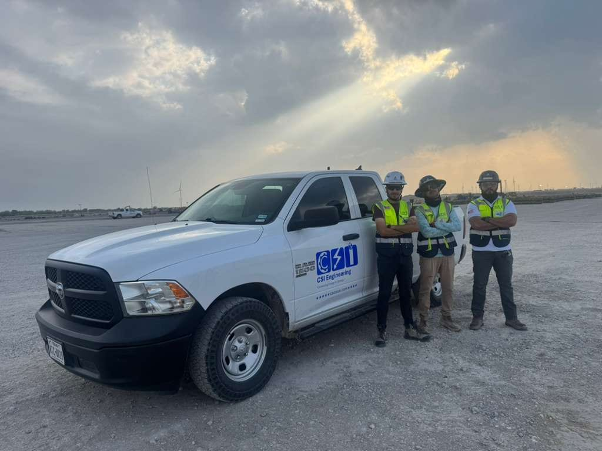
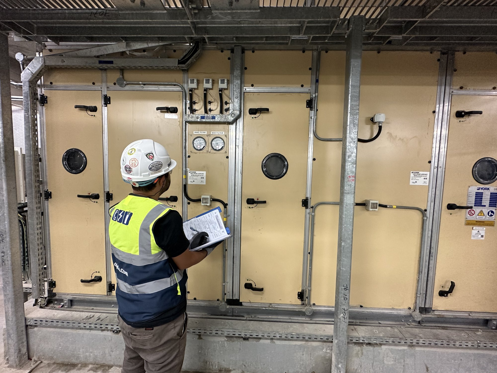
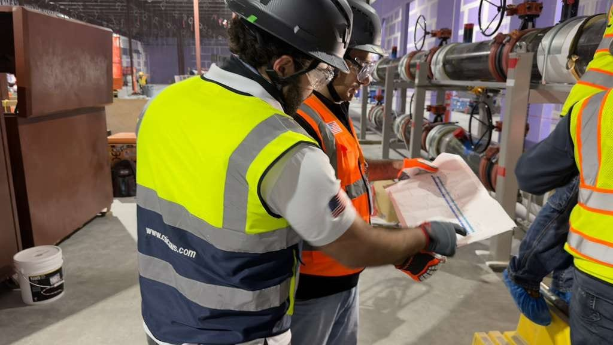

Statement of Qualifications
[Testing, Adjusting and Balancing Services]
Prepared for [Owner name], [Department]
Statement of Qualifications
Prepared for [Owner name], [Department]
[Month DD, YYYY]
[Contact name], [Title]
[Owner name]
[Street address], [City, State ZIP]
Re: [RFQ-00-000], [Services name]
Dear [Contact name],
Your outcome first. [One or two sentences that tell the owner what they get: systems that work on day one, a campus that stays open during testing, reports their staff can use.]
The team you will work with. [Project manager by name and credential, the TAB lead, the commissioning lead, and the office that will serve the work, with its distance to the site.]
Proof on like work. [Two or three named projects for similar owners, each with one measured result.]
How we will run it. [One sentence on the method that sets CSI apart for this scope.]
[Addenda acknowledged: 1, 2. This SOQ is valid for 90 days. Your single point of contact is named at right.]
Sincerely,
[Signer name], [Credential]
[Title], CSI Engineering, Inc.
Every heading in this SOQ uses the RFQ's own lettering, so each scoring item can be found in one step.
| RFQ item | Criterion | Points | Page |
|---|---|---|---|
| [4.1.1] | Firm qualifications and experience [Sub-items a to d as the RFQ words them] | [25] | 4 |
| [4.1.2] | Key personnel and organisation [Sub-items a and b] | [30] | 7 |
| [4.1.3] | Relevant project experience [Three projects of like scope in the last five years] | [20] | 6 |
| [4.1.4] | Approach and methodology [Sub-items a to c] | [15] | 9 |
| [4.1.5] | Quality control | [10] | 10 |
| [5.0] | Required forms [Owner forms, signed] | [Pass] | [#] |

Air handling unit verified against design. CSI technicians read panel data and log it on site, so findings reach the owner the same day.
[4.1.1] Firm qualifications and experience
[Owner benefit + CSI difference + proof, under 30 words. Example: your buildings stay open while we test, as at [project] for [owner].]
Who we are. CSI Engineering, Inc. is part of CSI Global. [Two or three sentences on services: testing, adjusting and balancing, commissioning, envelope testing; and the markets served.]
The office that serves you. [Office, staff count, distance to the owner's sites, and the equipment kept there. State that travel is not billed if true.]
Work for owners like you. [Two sentences naming like owners and what CSI delivered for them.]
Why it matters for this RFQ. [Tie the firm's strengths to the criteria the owner scores, in the owner's words.]
[Sample data.] [Caption that states the conclusion: most of CSI's recent work is in occupied education buildings, like the owner's.]


[One sentence on what this section proves: three projects of like size, for like owners, in the last five years.]

[Engineer checks the riser against the drawings] [before the chilled water test, so the test runs once.]
[One-sentence result: what the owner got, with a number.]
[Two or three sentences on the owner's problem, the systems involved and the limits: occupied building, tight turnover, seasonal testing.]
[Two or three sentences on scope and method in plain words. Name the systems tested and how many units.]
[One or two measured outcomes: issues closed before turnover, airflow within design, schedule kept.]
[4.1.2] Key personnel
[What this person does for the owner, and the like project that proves it, in under 30 words.]
[Owner], [City, State], [YYYY]
[Role. One line on scope, one line on the measured result.]
[Owner], [City, State], [YYYY]
[Role. One line on scope, one line on the measured result.]
[Owner], [City, State], [YYYY]
[Role. One line on scope, one line on the measured result.]
[Owner], [City, State], [YYYY]
[Role. One line on scope, one line on the measured result.]
[Owner], [City, State], [YYYY]
[Role. One line on scope, one line on the measured result.]
Reference
"[Named client quote, under 35 words.]" [Name, Title, Agency, Year]
[4.1.2(b)] Organisation chart
[Your project manager answers for the whole team; each lead below has done this role for a like owner.]
Owner
[Owner PM name]
[Owner], [Department]
Project manager, single contact
[Name, PE]
[NEBB TAB Pro No. 0000]
TAB lead
[Name]
[Credential]
Commissioning lead
[Name]
[Credential]
Quality reviewer
[Name]
[Credential]
Field technicians
[Name], [Name]
[Certifications]
Controls specialist
[Name]
[Credential]
How decisions flow. [Two sentences: the project manager is the single contact; leads report daily; issues go to the owner within 24 hours.]
Depth behind the team. [Two sentences on back-up staff in the serving office and how a change of staff is approved by the owner.]
| Team member | Role on this work | Office | Hours a month for you |
|---|---|---|---|
| [Name, PE] | Project manager | [City] | [00] |
| [Name] | TAB lead | [City] | [00] |
| [Name] | Commissioning lead | [City] | [00] |
| [Name] | Quality reviewer | [City] | [00] |
Hours, not percentages. [Caption: the team has [000] hours a month free for this contract after current work.]
[4.1.4] Approach and methodology
[Owner benefit: e.g. testing is sequenced around school hours, and every finding is closed before turnover.]
1
Review
Design and submittal review. You get a review log.
2
Verify
Installation checks before testing. You get a checklist set.
3
Test and balance
Air and water systems set to design. You get the TAB report.
4
Turn over
Training and systems manual. You get the final report.
5
Warranty
Ten-month return and seasonal tests. You get a warranty report.
Step 3 carries most of the scope. [Caption with a number: e.g. 000 terminal units and 00 air handlers tested in 00 weeks.]
[Three or four sentences on how CSI handles this item for this owner: sequence, crew size, instruments, and what the owner sees each week.]
[Three or four sentences, specific to the owner's systems and schedule. Name the risk and how it is managed.]
[Three or four sentences. End with the deliverable and its date.]
[4.1.5] Quality control
[Owner benefit + proof: e.g. a second engineer reviews each report; on [project] no report was returned for correction.]
One project record
Readings, findings and close-outs kept in one place the owner can open.
Plan
Test plan and instruments set per system.
Test
Readings logged on site, on tablets.
Second review
A senior engineer checks each sheet.
Log issue
Deficiency raised with photo and owner.
Close
Retest, sign-off, report issued.
The second review is where errors stop. [Caption with a number: e.g. 0 reports returned on the last 00 projects.]
Instruments. [Calibration schedule and certificates on file; list the main instruments.]
People. [Who reviews, their credentials, and how reviewers are kept independent of the field crew.]
Reporting. [Report format, how fast the owner receives findings, and how they are closed.]
Converting Energy to Synergy